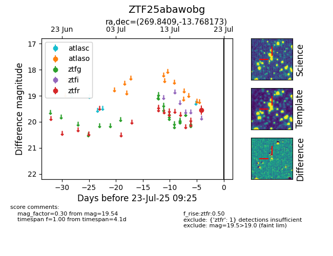

Target ZTF25abawobg at 2025-07-23 11:52, see:
FINK: fink-portal.org/ZTF25abawobg
Lasair: lasair-ztf.lsst.ac.uk/objects/ZTF25abawobg
ALeRCE: alerce.online/object/ZTF25abawobg
alt names
ZTF25abawobg (ztf,fink)
coordinates:
equatorial (ra, dec) = (269.8409,-13.76817)
galactic (l, b) = (14.7073,+4.94517)
photometry
last ztfr=19.54
1 ztfr detections
